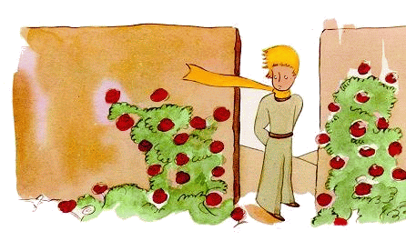
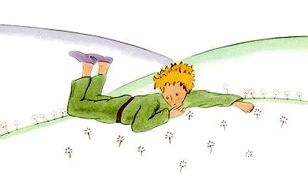

小王子 The Little Prince
第20章
第20章
小王子在沙漠、山岩和雪地上走了很长时间以后，终于发现了一条路。所有的路都通往有人住的地方。
“你们好，”他说。
眼前是一座玫瑰盛开的花园。
“你好，”玫瑰们说。
小王子瞧着她们。她们都长得和他的花儿一模一样。
“你们是什么花呀？”他惊奇地问。
“我们是玫瑰花，”玫瑰们说。
“噢！”小王子说……
他感到非常伤心。他的花儿跟他说过，她是整个宇宙中独一无二的花儿。可这儿，在一座花园里就有五千朵，全都一模一样！
“要是让她看到了，”他想，“她一定会非常生气……她会拼命咳嗽，她还会假装死去，免得让人耻笑。我呢，还得假装去照料她，否则她为了让我感到羞愧，说不定真的会让自己死去……”
随后他又想：“我还以为自己拥有的是独一无二的一朵花儿呢，可我有的只是普普通通的一朵玫瑰花罢了。这朵花儿，加上那三座只到我膝盖的火山，其中有一座还说不定永远不会再喷发，就凭这些，我怎么也成不了一个伟大的王子……”想着想着，他趴在草地上哭了起来。
